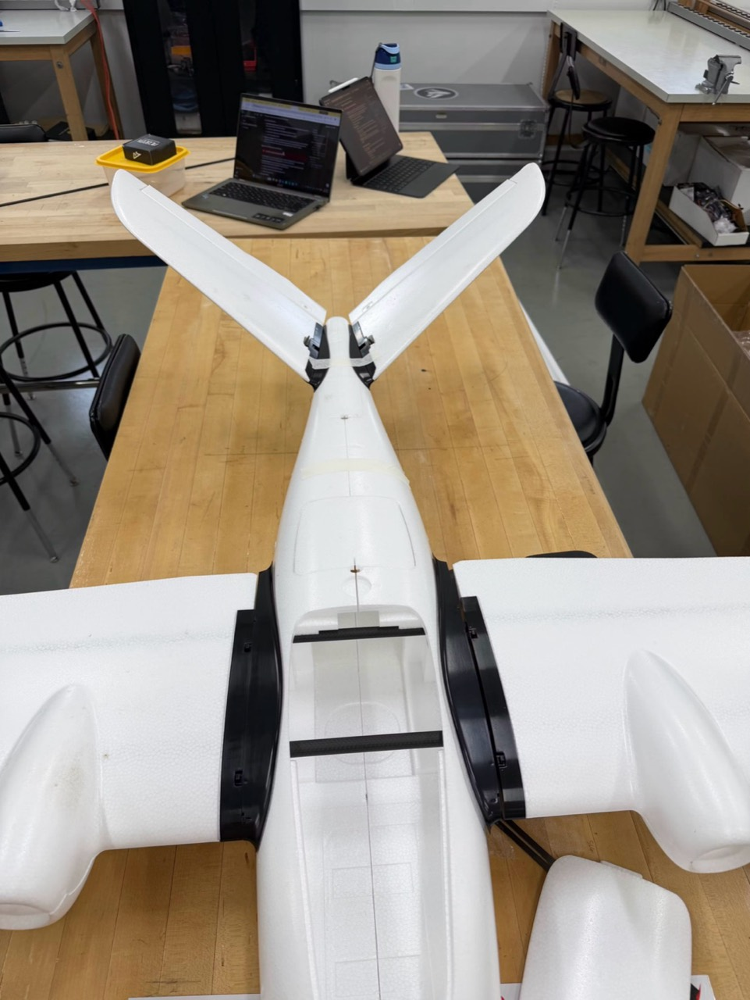
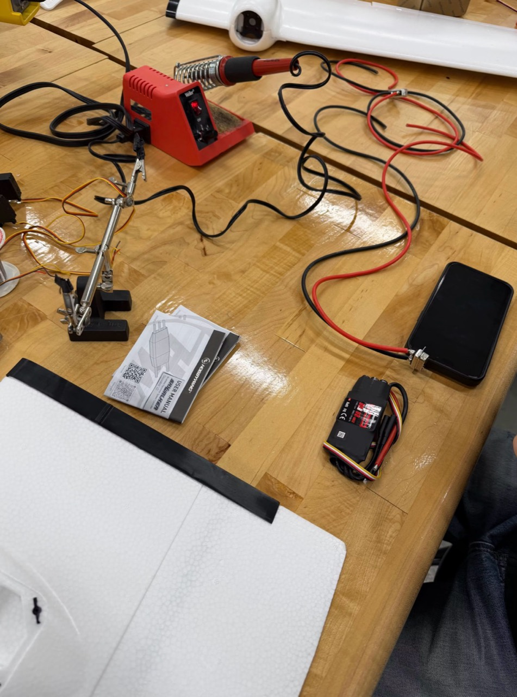
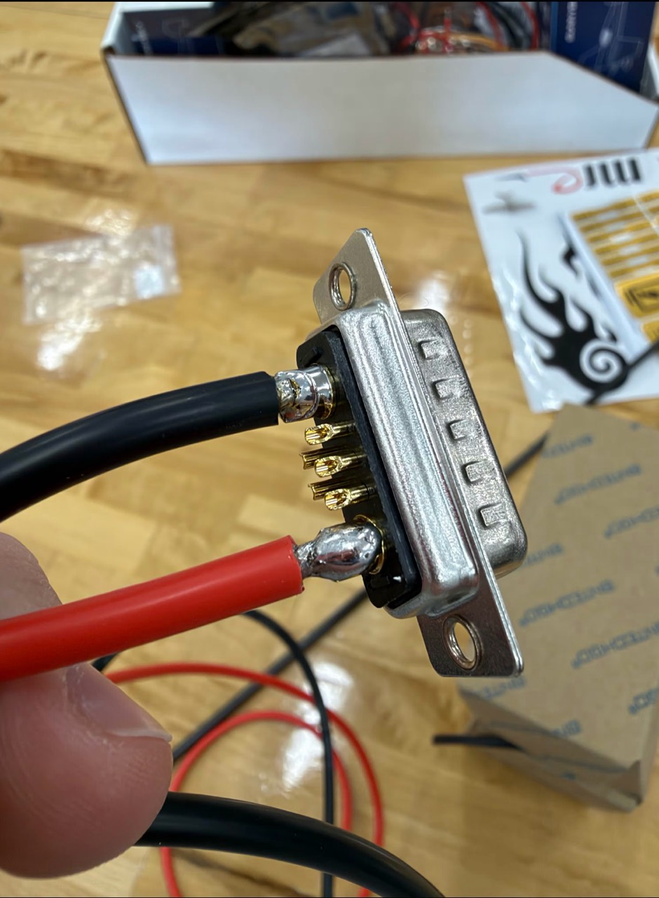
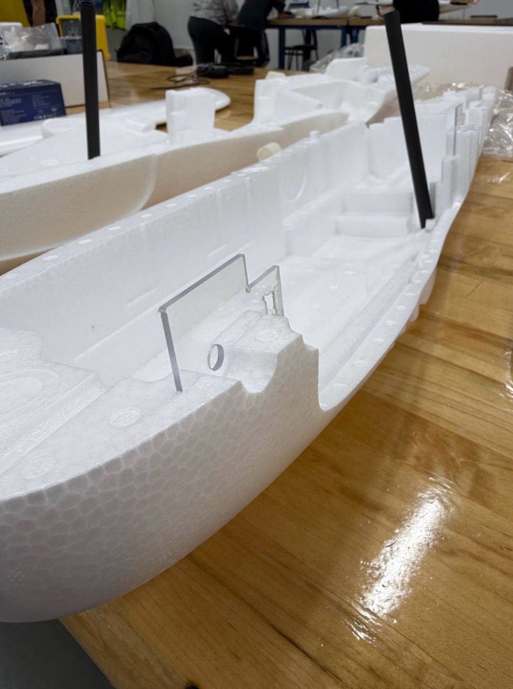
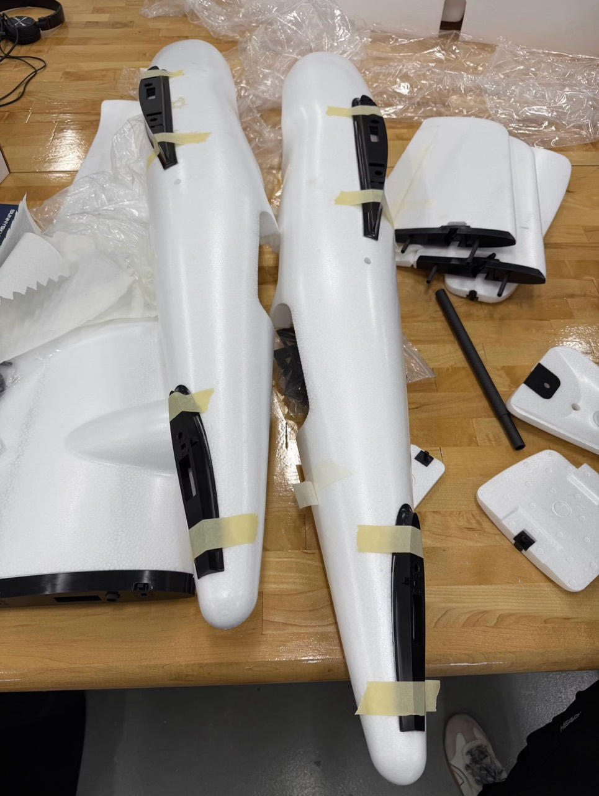

Project 01 / Fixed-wing build
MakeFlyEasy
Believer
Fixed-wing UASAircraft buildTeam project

Airframe assembly
01
Wiring on the bench
02
Connector detail
03
Inside the fuselage
04
Components & fittings
05The project
From components
to an aircraft.
Building a MakeFlyEasy Believer fixed-wing drone as a team.
This project documents our hands-on work putting the aircraft together. The build journal follows the process at the workbench.
View the build journal